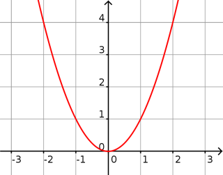

Définition : La fonction carrée est définie sur ℝ par : $f(x)=x^2$.
Propriétés : La fonction carrée est paire et positive. Elle est décroissante sur $]-\infty;0]$ et croissante sur $[0;\infty[$. Sa courbe est une parabole.
Courbe :

Limites :
$\displaystyle{\lim_{x \to - \infty} (x^2) = \lim_{x \to + \infty} (x^2) = + \infty }$
Exemple 1 :
Soit $f_1(x)=5-x^2$ et $f_2(x)=x^2+7$.
Par soustraction : $\displaystyle{\lim_{x \to + \infty} f_1(x) = - \infty}$.
Par somme : $\displaystyle{\lim_{x \to - \infty} f_2(x) = + \infty}$.